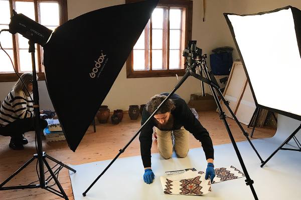
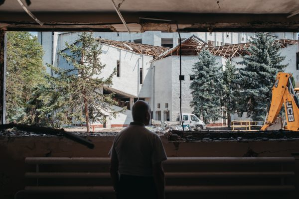
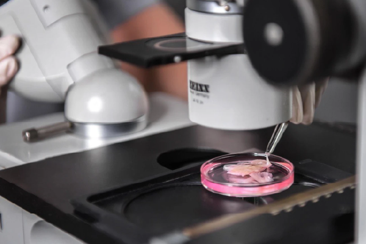
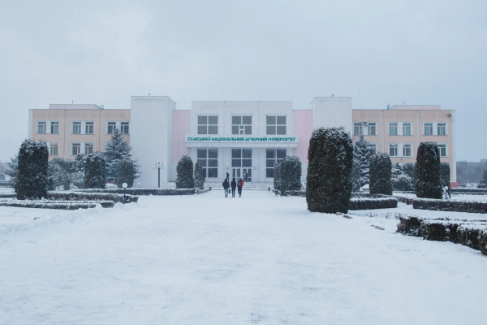

"Unbroken": How the Burn Unit Operates During a Full-Scale War At the Saint Luke Hospital, one of the center's subdivisions—the burn unit—is located. The most challenging patients from all over the country are brought here.  What is Museum Digitalization and Why is it Necessary? — The Experience of Ukrainian Heritage Monitoring Lab How are exhibits digitized, what opportunities do museums gain by having digital copies of their collections, and how can this help us in the war with Russia?  "It Wasn't Just the University That Suffered, But Also Ukraine's Energy Sector." How the Ivano-Frankivsk Oil and Gas University is Recovering After the Missile Strike On Saturday, June 22, 2024, a Russian missile had struck Ivano-Frankivsk National Technical University of Oil and Gas. This was the first missile strike in Ivano-Frankivsk since the attacks on the local airport at the start of the full-scale invasion, and it will be long remembered by the city's residents. "War in the Blood": How the Blood Transfusion Center Operates During a Full-Scale Invasion Due to the Russian invasion, the need for blood has increased by 60%, says DonorUA. People continue to donate blood, but there aren't as many volunteers as before. How the Center for Pediatric Cardiology and Cardiac Surgery is Recovering After the Russian Attack On the morning of July 8, 2024, a Russian strike damaged the Center for Pediatric Cardiology and Cardiac Surgery, which is located on the territory of "Okhmatdyt," but belongs to the Ministry of Health of Ukraine.  Bank of the human body and inhuman war We spoke with the director of the Institute of Cellular Biorehabilitation about the losses and gains of the biobank since February 24, 2022.  Accustomed to Risks Sumy National Agrarian University ranks at the top among agricultural universities, despite being located in one of the northernmost regions of Ukraine, just 30 kilometers from the Russian border. Explosive Fields: The Institute of Climate-Oriented Agriculture, Ammonium Nitrate Fortifications, and Aerial Bombs With the onset of the full-scale invasion, the institute's material base in Kherson. The fields were mined, and the scientific buildings and laboratories were destroyed by Russian occupiers. Fahrenheit 451. How the Kherson library survives under shelling After the occupation, the Kherson Regional Universal Scientific Library named after Oleksii Honchar is in a critical state: just across the river, a few hundred meters away, are the Russians. Previous 1 2 3 4 5 6 7 8 Next
"Unbroken": How the Burn Unit Operates During a Full-Scale War At the Saint Luke Hospital, one of the center's subdivisions—the burn unit—is located. The most challenging patients from all over the country are brought here.
 What is Museum Digitalization and Why is it Necessary? — The Experience of Ukrainian Heritage Monitoring Lab How are exhibits digitized, what opportunities do museums gain by having digital copies of their collections, and how can this help us in the war with Russia?
 "It Wasn't Just the University That Suffered, But Also Ukraine's Energy Sector." How the Ivano-Frankivsk Oil and Gas University is Recovering After the Missile Strike On Saturday, June 22, 2024, a Russian missile had struck Ivano-Frankivsk National Technical University of Oil and Gas. This was the first missile strike in Ivano-Frankivsk since the attacks on the local airport at the start of the full-scale invasion, and it will be long remembered by the city's residents.
"War in the Blood": How the Blood Transfusion Center Operates During a Full-Scale Invasion Due to the Russian invasion, the need for blood has increased by 60%, says DonorUA. People continue to donate blood, but there aren't as many volunteers as before.
How the Center for Pediatric Cardiology and Cardiac Surgery is Recovering After the Russian Attack On the morning of July 8, 2024, a Russian strike damaged the Center for Pediatric Cardiology and Cardiac Surgery, which is located on the territory of "Okhmatdyt," but belongs to the Ministry of Health of Ukraine.
 Bank of the human body and inhuman war We spoke with the director of the Institute of Cellular Biorehabilitation about the losses and gains of the biobank since February 24, 2022.
 Accustomed to Risks Sumy National Agrarian University ranks at the top among agricultural universities, despite being located in one of the northernmost regions of Ukraine, just 30 kilometers from the Russian border.
Explosive Fields: The Institute of Climate-Oriented Agriculture, Ammonium Nitrate Fortifications, and Aerial Bombs With the onset of the full-scale invasion, the institute's material base in Kherson. The fields were mined, and the scientific buildings and laboratories were destroyed by Russian occupiers.
Fahrenheit 451. How the Kherson library survives under shelling After the occupation, the Kherson Regional Universal Scientific Library named after Oleksii Honchar is in a critical state: just across the river, a few hundred meters away, are the Russians.